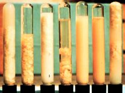

Diagnosis
Tests are available to determine the presence or absence of clinical and subclinical udder infection. These range in difficulty and sensitivity from a simple milk strip test to sophisticated laboratory procedures which detect the presence of organisms, somatic cells and compositional changes in milk
Clinical examination
Udder
Milk
Somatic cells
Direct microscopic counting
Indirect cell counting
Herd test
RMT
Whiteside test
Viscometer test
Chemical changes
pH
Electrical conductivity
NAGase
Bovine Serum Albumin
Culturing
Detection of mastitis is based upon the response of the animal to the infection. It can be done by clinical procedures or diagnostic tests. In-line filters, foremilk stripping, udder palpation and electronic sensors may all be used to detect clinical mastitis. Subclinical mastitis must be detected by cytological and biochemical changes in the milk.
Clinical examination
An affected gland may show swelling, heat, hardness and redness. Palpation of the udder may be painful to the cow. The milk may show clots, flakes, colour variation, smell and texture.
In acute cases, systemic signs may be present including pyrexia, anorexia and occasionally recumbency.
Other mammary abnormalities, including oedema, passive congestion, rupture of the suspensory ligament and haematomata, are not accompanied by abnormality of the milk unless there is haemorrhage into the udder.
Palpation is a useful means of detecting mastitis in dry cows, when stripping milk is undesirable as this would disrupt the keratin plug.
Rapid Mastitis Test (originally California Mastitis Test)
This indirect test indicates the concentration of somatic cells in milk and is used to diagnose subclinical mastitis. A detergent reagent lyses somatic cells and causes their DNA to form a gel when mixed with milk. The more cells present, the thicker the gel. Somatic cells are mainly white blood cells and some epithelial cells.
The test is useful when investigating high somatic cell count problems in a herd and it is recommended that farmers test all cows at the end of the colostrum period prior to entry into the herd.
Photo Kiro R Petrovski, 2008
Scoring and Interpretation of the R.M.T. (Douglas et al. 1997)
| Scoring | Precipitation | Somatic cell count interpretation (x1000 cells / ml) |
| Negative | None | 0-200 |
| Trace | Slight | 150-400 |
| 1 | Small amount of precipitate | 300-1000 |
| 2 | Distinct precipitate | 700-2000 |
| 3 | Thick gel | >2000 |
 RMT procedure
RMT procedure
Withdraw milk from each quarter into the appropriate cup of the RMT paddle. Discard excess milk.
Add reagent in an equal amount to the milk. Swirl the paddle approximately 10 times. Assess the degree of gelling and viscosity. Record the results.
Herd-test results (Individual cow somatic cell count)
Herd testing in NZ is a service offered to dairy farmers by the Livestock Improvement Corporation (LIC) and Ambreed. Milk samples are collected from all milking cows in the herd. Production parameters and individual cow somatic cell counts are reported back to the farmer. Somatic cells are counted using an instrument that detects dyes that mark each individual cell. This is a direct method of counting somatic cells.
More than 150,000 cells/ml means there is a chance that at least one quarter is infected. About 70% of dairy farmers in New Zealand undertake herd testing. The information is commonly used to make decisions about culling and dry cow therapy. At least three tests are required annually to show trends in cows’ cell count levels in order to make accurate decisions.
Electrical conductivity
Electrical conductivity tester
Courtesy of Shoof International Ltd
Mastitis detector - electrical conductivity tester
Courtesy of Shoof International Ltd
Milk from cows with mastitis has altered electrical conductivity due to an increase in its ionic content.
Each cow has her own "normal" level which varies between cows, so it is not possible to specify one value that indicates mastitis. It is important to check each quarter of a cow and compare values. An increase in one quarter (over 15%) means that the quarter is probably infected.
A range of meters are available. With some, the value displayed increases with mastitic milk; with others it decreases. Users need to be familiar with the type of meter they are using.
Care needs to be taken with interpretation when multiple quarters are infected. The lowest (or highest with some meters) value should be interpreted as un-infected.
There is not always a good relationship between conductivity and somatic cell count.
N-acetyl-β-D-glucosaminidase (NAGase)
NAGase is a lysosomal enzyme, which increases in milk when mastitis is present. Its activity in milk is highly correlated with the concentration of leukocytes (the somatic cell count). Milk NAGase levels are high at the beginning and the end of lactation, as are cell counts.
pH
“Normal” milk has a pH of approximately 6.5 to 6.7, whereas mastitic milk often approaches the plasma pH of 7.4.
pH indicator strips or other pH testers, can be used to detect more alkaline milk in quarters with mastitis.
False positive results are possible during the colostrum period and in late lactation.
In-line filters
They are an alternative to examination of the foremilk for clotting. In-line filters are installed in the long milk tube. They screen the milk for clots. There are some disadvantages of in-line filters. The clots may block the milk line and the cups fall off. This will keep some mastitic milk out of the vat but may upset the work-flow in the shed.
These filters do not detect cows with watery milk and very few clots. Some abnormal milk will pass into the bulk supply before detection. Affected quarter(s) have to be identified by further examination. Such filters are not used commonly in NZ due to disadvantages such as reduced milking efficiency.
Materials required for sampling:
- Sterile sampling containers with watertight lids
- Labels
- Teat wipes or cotton balls dampened with alcohol
- Marker pen
- Paper towels
- Disposable latex examination gloves
Procedure:
Label containers
Label the container including farm, cow ID, quarter, date and time (morning or afternoon milking).
Clean teats
Using a hand or dry paper towel, brush loose dirt from the udder and teats. Grossly dirty teats and udders should be washed and dried thoroughly before proceeding with sample collection. Udders should be washed as a last resort. If the teats or udders are washed, then they should be dried, using dry paper towels.
Strip foremilk
Discard a few squirts (2-3) of milk from each teat.
Disinfect teats
Beginning with the teats furthest from the operator, scrub teat ends vigorously (10 to 15 seconds) with teat wipes or cotton balls dampened with alcohol. Use as many wipes as necessary to clean the teat ends. Teat ends should be scrubbed until no more dirt appears on the wipe or is visible on the teat end. Once the teats are clean, take care to avoid contact with tails, feet and legs. If the cow is not cooperative, scrub the nearest teat until clean, obtain the sample, and move on to the next teat. The teats should be allowed to dry for several seconds before sampling.
Sampling
To minimize cross-contamination, milk samples are to be taken first from the nearest teats and then from the most distant teats – the reverse order from cleaning. To collect the sample, remove the cap from the container but do not set the cap down or touch the inner surface of the cap. Always keep the open end of the cap facing downward. Maintain containers at approximately a 450 angle while taking the sample. The first two to three squirts of milk are discarded, then samples are directed into the container. Do not allow the lip of the sample container to touch the teat end, fingers or hands. Two to five millilitres of milk is generally a sufficient sample size. Do not fill the container more than ¾ full. Change gloves between cows.
Record sampling
Record sampling on the form provided.
Store samples
Store samples immediately in a cooler before taking them to a freezer to be immediately frozen if they are not delivered fresh to a laboratory.
Sample delivery
Samples should be properly packed and kept cold when they are transported any distance.
Aseptic milk sampling procedure
Photos Kiro R Petrovski 2008